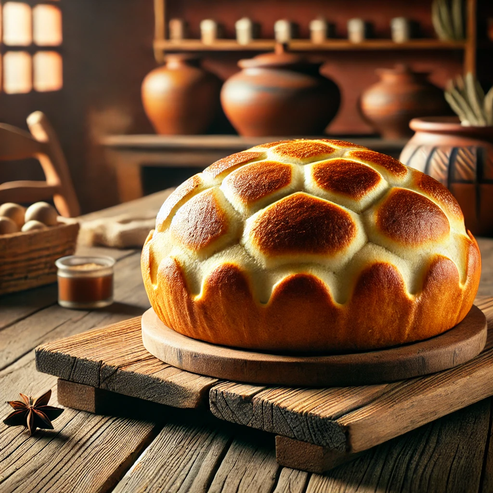
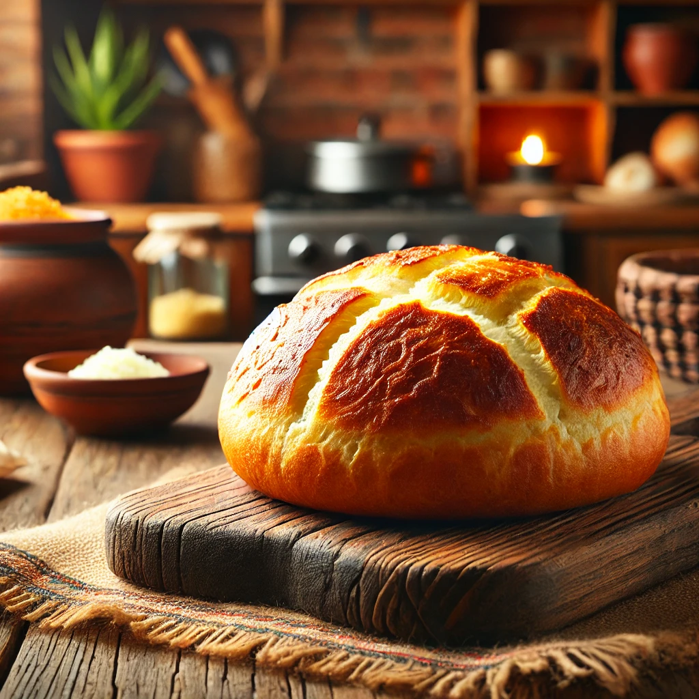
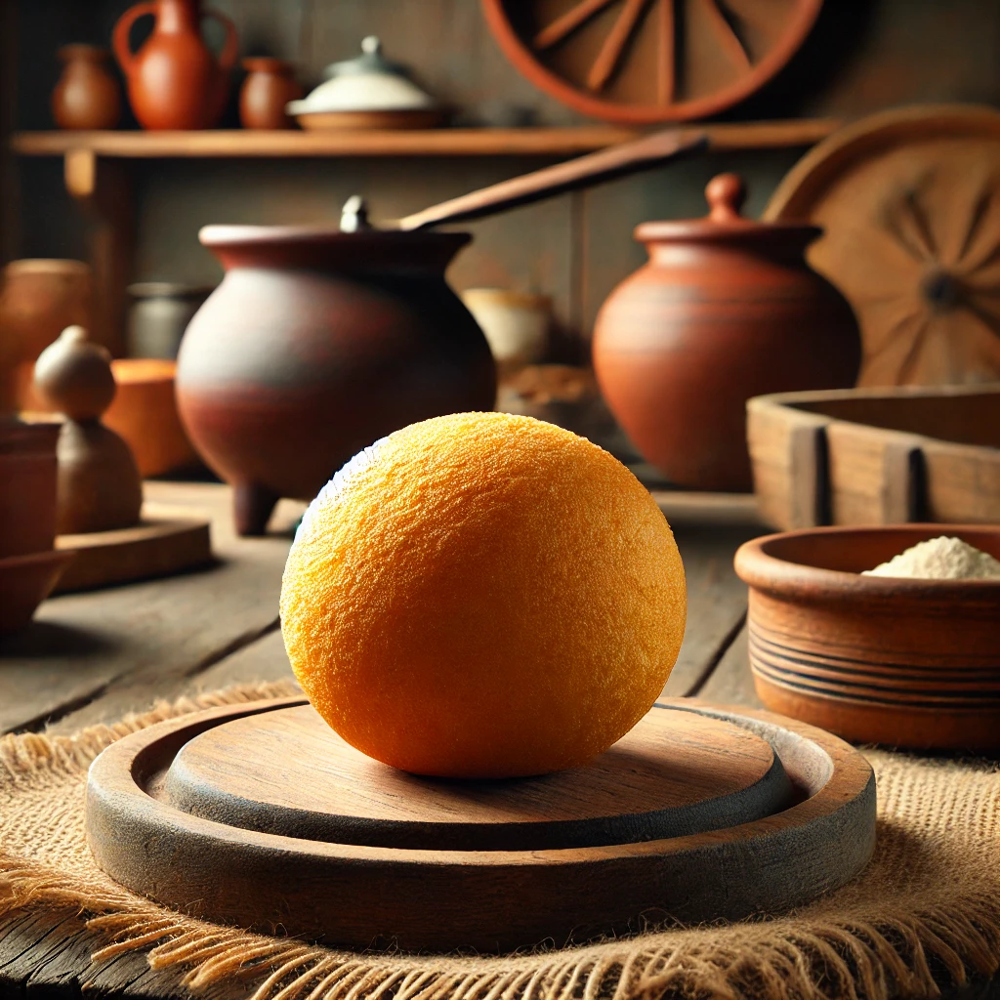
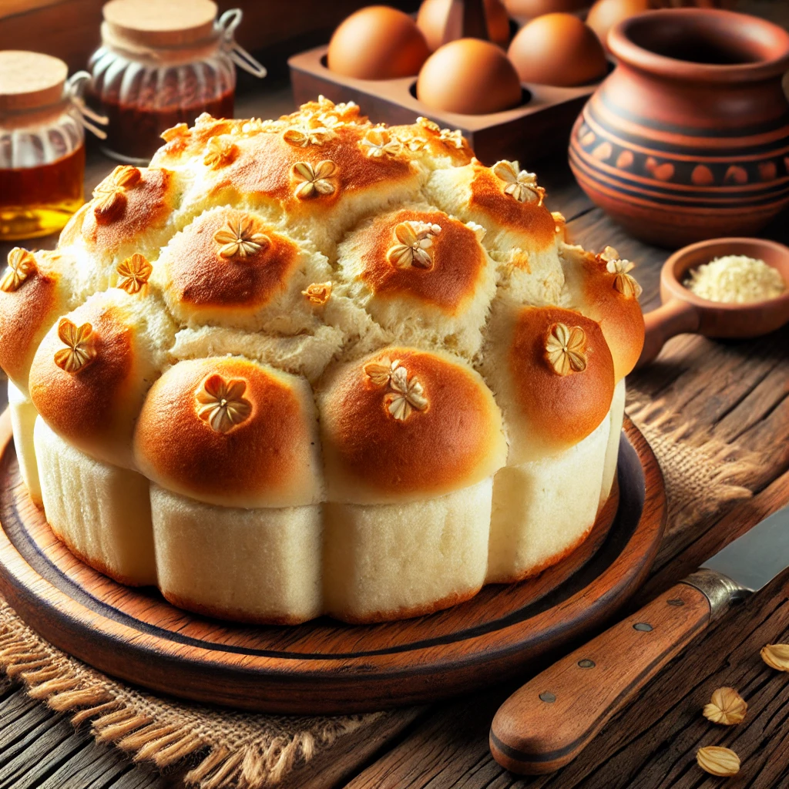
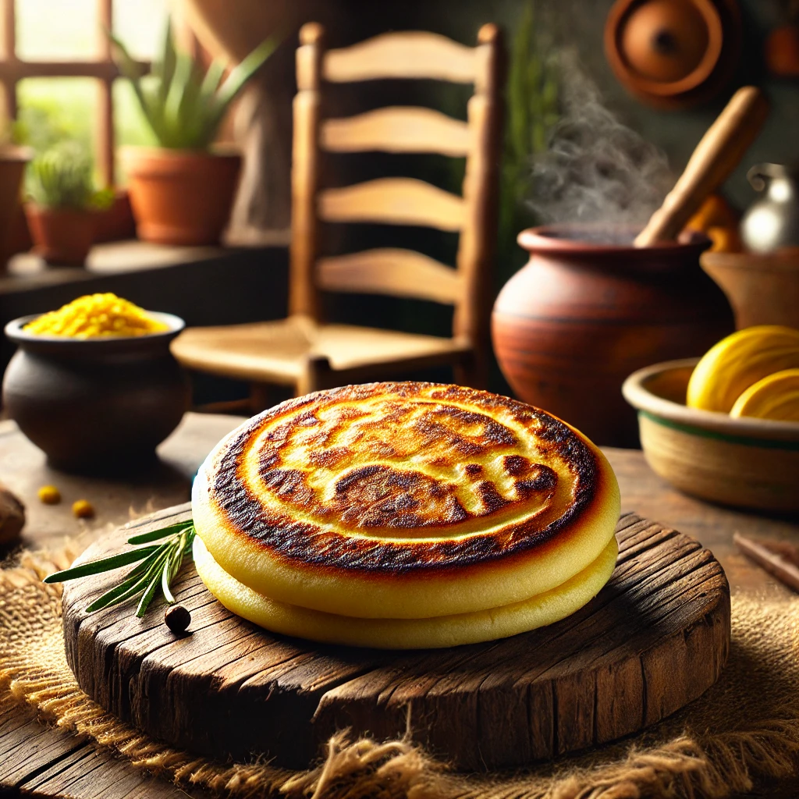
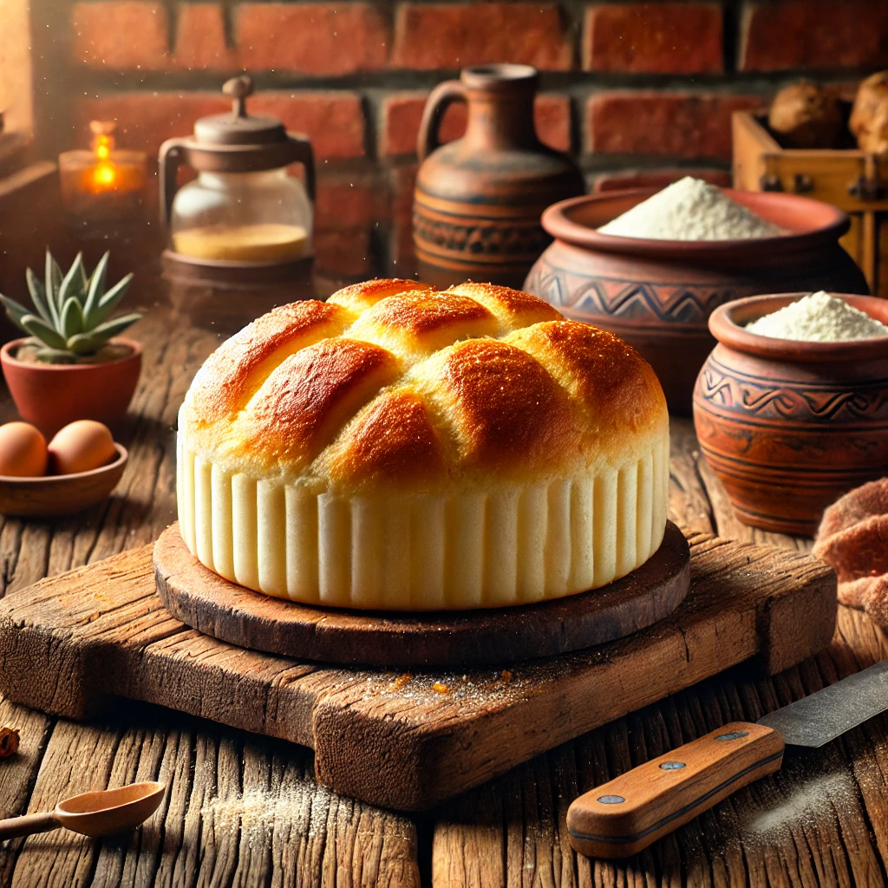

Panecillo redondo, hecho con harina de maíz y queso, de textura suave y sabor ligeramente salado.

Pequeño pan de queso con una corteza ligeramente crujiente y un interior suave y esponjoso, elaborado con almidón de yuca.

Bola frita de masa de queso con una textura crujiente por fuera y esponjosa por dentro, con un toque dulce y salado.

Pan dulce y esponjoso, con una corteza dorada y un interior suave, ideal para acompañar con café.

Arepa dulce hecha de maíz tierno (choclo), con una textura suave y un sabor ligeramente dulce, a menudo acompañada de queso.

Pan pequeño y masticable, hecho con almidón de yuca y queso, con un sabor suave y ligeramente salado.